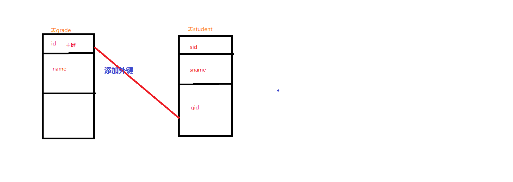

数据库（Database)是按照数据结构来组织、存储和管理数据的仓库，其本身可看作电子化的文件柜。用户可以对文件中的数据进行增加、删除、修改查找等操作。
数据库是存储和管理数据的仓库，但数据库并不能直接数据，数据是存储在表中的，在存储数据的过程中一定会用到数据库服务器，所谓的数据库服务器就是指在计算机上安装一个数据库管理程序，如MySQL.
一个数据库服务器可以管理多喝数据库，通常情况下开发人员会针对每个应用创建一个数据库，为保存应用中实体的数据，会在数据库中创建多个表（用于存储和描述数据的逻辑结构），每个表都记录着实体的相关信息。
表的横向被称为行，纵向称为列，每一行的内容被称为一条记录，每一列的列名被称为字段。
SQL（Structured Query Language，结构化查询语言）是一种数据库查询语言和程序设计语言，主要用来管理数据库中的数据，比如存取数据、查询数据、更新数据等。
它由下面4部分组成
数据库中的操作都是通过SQL语句来完成的，而且在应用程序中经常使用SQL语句，例如在Java语言中嵌入SQL语句，通过执行Java语言来调用SQL语句，就可以完成数据的插入、修改、删除、查询等操作。不仅如此，SQL语句还可以嵌套在其他语言中，如PHP
| 功能 | 语法 |
|---|---|
| 创建数据库 | Create database itcast |
| 查看所有数据库 | show databases; |
| 查看创建好的额数据库的信息 | show create database itcast; |
| 删除数据库（慎用） | Drop database itcast; |
使用MySQL数据库存储数据时，不同的数据类型决定了MySQL存储数据方式的不同。为此,MySQL数据库提供了多种数据类型，其中包括整数类型、浮点数类型、定点数类型、日期和时间类型、字符串类型和二进制类型。
整数类型
| 数据类型 | 字节数 | 无符号数的取值范围 | 有符号数的取值范围 |
|---|---|---|---|
| TINYINT | 1 | 0-255 | -128 ~ 127 |
| SMALLINT | 2 | 0-65535 | -32768~32767 |
| MEDIUMINT | 3 | 0-16777215 | -8388608~8388607 |
| INT | 4 | 0-4294967295 | -2147484648~ 2147484647 |
| BIGINT | 8 | 0-18446744073709551615 | -9223372036854775808~9223372036854775807 |
浮点数类型，定点数类型
在MYSQL数据库中，存储小数都是使用浮点数和定点数来表示的。浮点数的类型有两种，分别是单精度浮点类型（FLOAT)和双精度浮点数类型（DOUBLE),而定点数类型只有DECIMAL类型。
| 数据类型 | 字节数 | 负数的取值范围 | 非负数的取值范围 |
|---|---|---|---|
| FLOAT | 4 | ||
| DOUBLE | 8 | ||
| DECIMAL(M,D) | M+2 |
日期和时间类型
为了方便在数据库中存储日期和时间，MYSQL提供了表示日期和时间的数据类型，分别是YEAR、DATE、TIME、DATETIME和TIMESTAMP.
| 数据类型 | 字 节 数 | 取 值 范 围 | 日 期 格 式 | 零值 |
|---|---|---|---|---|
| YEAR | 1 | 1901-2155 | YYYY | 0000 |
| DATE | 4 | 1000-01-01~9999-12-3 | YYYY-MM-DD | 0000-00-00 |
| TIME | 3 | HH:MM:SS | 00:00:00 | |
| DATETIME | 8 | YYYY-MM-DD HH:MM:SS | 00:00:00 | |
| TIMESTAMP | 4 | YYYY-MM-DD HH:MM:SS | 00:00:00 |
每种表示日期和时间类型的取值范围都是不同的，需要注意的是如果插入的数值不合法，系统会自动将对应的零值插入数据库中。
字符串和二进制类型
为了存储字符串、图片和声音等数据，MYSQL提供了字符串和二进制类型
| 数据类型 | 类型说明 |
|---|---|
| CHAR | 用于表示固定长度的字符串 |
| VARCHAR | 用于表示可变长度的字符串 |
| BIMARY | 用于表示固定长度的二进制数据 |
| VARBINARY | 用于表示可变长度的二进制数据 |
| BLOB | 用于表示二进制大数据 |
| TEXT | 用于表示大文本数据 |
| ENUM | 用于表示枚举类型‘ |
| SET | 用于表示字符串类型 |
| BIT | 表示位字段 |
数据库创建成功后，就需要创建数据表。
所谓创建数据表指的是在已存在的数据库中创建 新表。
在操作数据表之前，应该使用USE 数据库名
指定操作是在哪个数据库上.
基本语法
```
CREATE TABLE 表名（
字段名1 数据类型[完整性约束条件]，
字段名2 数据类型[完整性约束条件]，
。。。。。
字段名n 数据类型[完整性约束条件]
）;
```
表名指的是创建数据表的名称，“字段名”指的是数据表的列名，完整性约束条件指的是字段的某些约束性条件。
| 功能 | 语法 |
|---|---|
| 查看数据表 | SHOW CREATE TABLE 表名; |
| 查看数据表 | DESCRIBE 表名; |
| 修改表名 | ALTER TABLE 旧表名 RENAME 新表名 |
| 修改字段名 | ALTER TABLE 表名 CHANGE 旧字段名 新字段名 新数据类型 |
| 修改字段的数据类型 | ALTER TABLE 表名 MODIFY 字段名 数据类型; |
| 添加字段 | ALTER TABLE 表名 ADD 新字段名 数据类型 [约束条件] [FIRST，AFTER 已存在字段名] |
| 删除字段 | ALTER TABLE 表名 DROP 字段名 ； |
| 删除数据表 | DROP TABLE 表名; |
为了房主数据表中插入错误的数据，在MySQL中，定义了一些维护数据库完整性的规则，即表的约束。
| 说明 | 约束条件 |
|---|---|
| 主键约束，用于唯一标志对应的记录 | PRIMARY KEY |
| 外键约束 | FOREIGN KEY |
| 非空约束 | NOT NULL |
| 唯一性约束 | UNIQUE |
| DEFAULT | 默认值约束，用于设置字段的默认值 |
| AUTO_INCREMENT | 设置表的字段值自动增加 |
在MySQL中，为了快速查找表中的某条信息，可以通过设置主键来实现，主键约束是通过PRIMARY KEY定义的，它可以唯一标志表中的记录，这就好比身份证可以用来标志人的身份一样；在MySQL中，主键约束分为两种:
单字段主键：由一个字段构成的主键 其基本语法格式如下：
字段名 数据类型 PRIMARY KEY
多字段主键： 多个字段组合而成的之间，其基本语法格式如下:
RIMARY KEY(字段名1，字段名2，。。。。。。字段名n)
非空约束指的是字段的值不能为NULL,在MySQL中，非空约束是ton过 NOT NULL定义的:
字段名 数据类型 NOT NULL
唯一约束用于保证数据表中字段的唯一值，即表中字段的值不能重复出现。唯一约束是通过 UNIQUE 定义的，其基本语法格式如下：
字段名 数据类型 UNIQUE;
默认约束用于给数据表中的字段指定默认的值，即当表中插入一条心记录时，如果没有给这个字段赋值，那么，数据库系统会自动为这个字段插入默认值，默认值是通过 DEFAULT关键字来定义的：
字段名 数据类型 DEFAULT 默认值；
在数据表中，若想为表中插入的新记录自动生成唯一的ID，可以使用AUTO_INCREMENT约束来实现，AUTO_INCREMENT约束的字段可以是任何整数类型。默认情况下，该字段的值从1开始增加。
字段名 数据类型 AUTO_INCREMENT;
数据库的索引好比新华字典的音序表，它是对数据表中的一列或多列的值进行排序后的一种结构，其作用就是提高表中的查询速度：
MySQL中的索引分为很多种：
普通索引，唯一索引或者全文索引。*要想使用索引提高数据表的访问速度，首先要创建一个索引，创建索引的方式有3中： *
1、创建 表的时候创建索引
```
CREAATE TABLE 表名 (
字段名 数据类型[完整性约束条件]，
字段名，数据类型[完整性约束条件]，
。。。。
[UNIQUE|FULLTEXT|SPATITAL] INDEX|KEY
[别名] （字段名1 [(长度)]） [ASC|DESC]
```
2、使用CREATE_INDEX语句在已经存在的表上创建索引
```
CREATE [UNIQUE|FULLTEXT\SPATIAL] INDEX 索引名
ON 表名 （字段名 【（长度）】 [ASC|DESC]）;
```
由于索引会占用一定的磁盘空间，因此，为了避免影响数据库的性能，应该及时删除不再使用的索引。删除索引的方式有两种，具体如下：
使用DROP INDEX 删除索引
ALTER TABLE 表名 DROP INDEX 索引名；
DROP INDEX 索引名 ON 表名；
| 说明 | 语法 |
|---|---|
| 为表中所有字段添加 | insert into 表名 （字段名1 ，字段名2 ，。。。。） values (值1，值2，。。。。） 类型顺序匹配 |
| 为表中所有字段添加 | ** insert into 表名 values (值1，值2，值。。。。)** |
| 同时添加多条记录 | insert into 表名 （字段名1 ，字段名2 ，。。。。） values (值1，值2，。。。。）,(值1，值2，。。。。） |
*更新数据就是指对表中存在的记录进行修改，这是数据库常见的操作，比如某个学生改了名字 ，就需要对其记录信息中的name字段值进行修改 MySQL中使用UPDATE语句来更新表中的记录 ，其基本的语法格式 *
UPDATE 表名
SET 字段名1 = 值1，【字段名2=值2】
[where 条件表达式 ]
```
删除数据是指对表中存在的记录进行删除，这是数据库的常见操作
DELETE FROM 表名 [WHERE 条件表达式]
MySQL从数据表中查询数据的基本语句是SELECT语句。在SELECT语句中，可以根据自己 对数据的要求，使用不同的查询条件，SELECT语句的基本语法格式如下： `
SELECT [DISTINCT] *|字段名1，字段名2，字段名3，。。。
FROM 表名
where 条件表达式1
GROUP BY 字段名 HAVING 条件表达式2
ORDER BY 字段名 [ASC|DESC】
LIMIT OFFSET 记录数
`
(1)DISTINCT:用于剔除查询结果中重复的数据
(2) GROUP BY:用于将查询结果按照指定字段进行分组
(3)HAVING:用于对分组后的结果进行过滤
(4)ORDER BY:用于将查询结果按照指定字段进行排序
(5)LIMIT OFFSET 记录数 ：用于限制查询的数量，
OFFSET:表示偏移量，如果偏移量为0，则从查询结果的第一条记录开始
记录数：表示返回查询记录的条数 】
| 说明 | 语法 |
|---|---|
| 查询所有字段 | select * from 表名 |
| 查询指定字段 | SELECT 字段名1，字段名2，。。。。。FROM 表名 |
数据库中包含大量的数据，很多时候需要根据需求获取指定的数据，或者对查询的数据进行排列组合，这时就要在SELECT语句中指定查询条件对查询结果进行过滤
SELECT 字段名
FROM 表明
WHERE 条件表式
| 分类 | 关键字 | 条件表达式 |
|---|---|---|
| 带关系运算符的查询 | =，<>,>,<,!= | 字段名 条件表达式 |
| 带in关键字的查询 | IN 关键字用于判断某个字段是否在指定的集合中，如果字段的值在集合中，则满足条件，该字段所在的记录将被查询出来 | 字段名 [NOT] IN (元素1，元素2.。。） |
| BETWEEN....AND | 关键字查询 ：用于判断某个字段的值是否在指定的范围之内，如果字段的值在指定的范围内，则被查询出来，反之 | WHERE 字段名 BETWEEN 值1 AND 值2 |
| NULL | 空值查询 | WHERE 字段名 is [NOT] NULL |
| DISTINCT | 去掉重复记录的字段 , 作用于多个字段，只有DISTINCT关键字后指定的多个字段值都相同，才会被认作是重复的记录 ， | SELECT DISTINCT 字段名 from 表名 |
| LIKE | 正则表达式，模糊查询 | WHERE 字段名 [NOT] LIKE "匹配字符串" |
| AND | 键字可以连接两个或者多个查询条件，只有满足所有条件的记录才会被返回 | WHERE 条件表达式1 AND 条件表达式2 [....AND 表达N] |
| OR | WHERE 条件表达式1 OR 条件表达式2 [....OR 表达N] |
匹配字符串指定用来匹配的字符串，其值可以是一个普通字符串，也可以是包含百分号（%)和下划线(_)的通配字符串。
①百分号匹配：匹配任意长度的字符串，包括空字符串，例如： c%:匹配以字符c开始，任意长度的字符串
②下换线通配符: 只匹配单个字符，如果要匹配多个字符，需要使用多个下划线通配符。**
聚合函数:s实际开发中，经常需要对数据进行统计，例如统计某个字段的最大值、最小值、平均值等，为此MYSQL中提供了一些函数来实现这些功能。这些函数 用于对一组值进行统计，并返回唯一的值，这些函数被称为聚合函数。
| 函数名称 | 作用 |
|---|---|
| COUNT() | 返回某列的函数 |
| SUM() | 反回某列值的和 |
| AVG() | 返回某列的平均值 |
| MAX() | 返回某列的最大值 |
| MIN() | 返回某列的最小值 |
```
SELECT 字段名1，字段名2.。。。
FROM 表名
ORDER BY 字段名1[ASC|DESC] ,字段名2[ASC|DESC]
```
在对表中数据进行统计时，也可能需要按照一定的类别进行统计。在MySql中，可以使用GROUP BY 按照某个字段或者多个字段中的值进行分组，字段中值相同的为一组，其语法格式如下：
```
SELECT 字段名1，字段名2，。。。。,聚合函数（）
FROM 表名
GROUP BY 字段名1，字段名2 [HAVING 条件表达式 ]
``` 在上面的语法格式中，指定的字段名1、字段名2等是对查询结果分组的依据。HAVING 关键字指定条件表达式对分组后的内容进行过滤。需要特别注意的是，GROUP BY一般和聚合函数一起使用，如果查询的字段出现在GROUP BY 后，却没有包含在聚合函数中 ，该字段显示的是分组后的第一条记录的值，这样有可能会导致查询结果不符合我们的预期。
单独使用 GROUP BY分组
SELECT * FROM STUDENT GROUP BY gender;
分析：查询结果按照gender字段中不同的值来分类，然而这样的查询结果只显示每个分组中的一条记录，意义不大，一般情况下 GROUP BY都和聚合函数一起使用
GROUP BY和聚合函数一起使用：-- GROUP BY和聚合函数一起使用，可以统计出某个或者某些歌字段在一个分组中的最大值、最小值、平均值等。
select gender, count(*) from student group by gender;
分析：-- 例：将student表按照gender字段值进行分组查询，计算出每个分组中各有多少名学生
GROUP BY和HAVING关键字一起使用 AVING 关键字和WHERE关键字的作用相同，都用于设置条件表达式对查询结果进行过绿，两者的区别在于，HAVING关键字后可以跟聚合函数，而WHERE关键字不能 通常情况下HAVING关键字都和GROUP BY一起使用，用于对分组后的结果进行过滤 。
select sum(grade),gender from student group by gender having sum(grade)<300;
分析：-- 例:将student 表按照gender字段进行分组查询，查询出grade字段值之和小于300的分组
使用LIMIT限制查询结果的数量
```
SELECT 字段名1，字段名2.。。。
FROM 表名
LIMIT [OFFSET] 记录数
```
MySQL中提供了丰富的函数，通过这些函数可以简化用户对数据的操作。MYSQL中的函数包括数学函数、字符串函数、日期和时间函数、条件判断函数、加密函数等
数学函数
| 函数名称 | 作用 |
|---|---|
| ABS(X) | 绝对值 |
| SQRT(X） | 返回X的非负2次方跟 |
| MOD(X,Y) | 返回X被Y除后的余数 |
| SIGN(x) | 返回x的符号 |
字符串函数
| 函数名称 | 作用 |
|---|---|
| LENGTH(str) | 返回字符串str的长度 |
| CONTACT(s1,s2....) | 返回一个或者多个字符串拼接产生的新字符串 |
| TRIM(str) | 删除字符串两侧的空格 |
| REPLACE(str,s1,s2) | 使用字符串s2替换字符串str中所有的字符串s1 |
| SUBSTRING（str,n,len) | 返回str的字符串的子串，其实位置为n,长度为len |
| REVERSE(str) | 返回字符串反转后的杰锅锅 |
日期和时间函数
| 函数名称 | 作用 |
|---|---|
| CURDATE() | 返回系统当前日期 |
| CURTIME | 返回系统当前时间 |
| SYSDATE() | 获取当前系统日期和时间 |
| ADDDATE() | 执行日期的加运算 |
| SUBDATE() | 执行日期的减运算 |
条件判断函数
| 函数名称 | 作用 |
|---|---|
| IF(EXPR,v1,v2) | 如果expr表达式为true返回v1,否则返回v2 |
| IFNULL(v1,v2) | 如果v1不为空返回v1否则返回v2 |
| CASE expr WHEN v1 THEN r1 [WHEN v2 THEN r2....] [ELSE rn] end | 如果expr值等于v1,v2等，则返回对应位置THEN后面的结果，否则返回ELSE后面的结果 |
在实际开发中业务较为复杂，需要对两张以上的表进行操作，即多表操作。
外键：引用另一个表中的一列或多lie，被引用的lie应该具有主键约束或唯一性约束，外键用于建立个加强两个表之间的链接。

被引用的表，即grade是主表；引用外键的表，即表student是从表，两个表是主从关系。
引用外键后，外键列只能插入参照列中存在的值，参照列被参照的值不能被删除，这就保证了数据的完整性。
```
alter table 表名
add constraint FK_ID foreign key(外键字段名)
Reference 外表表名 (主键字段名)
```
语法: alter table 表名 drop foreign key 外键名 ；
在关系型数据库管理系统中，建立表时各个数据之间的关系不确定，通常将每个实体的所有信息存放在一个表中，当查询alter数据时，通过链接操作查询多个表中的实体信息，当两个或者多个表中存在意义相同的字段时，便可以通过这些字段对不同的表进行链接查询链接查询包括：交叉链接查询 、内连接查询、外连接查询
-- 交叉链接返回的结果是被链接的两个表中所有数据行的笛卡尔乘技术：
SELECT * FROM 表1 CROSS JOIN 表2
内连接：内连接使用比较运算符对两个表中的数据进行比较，并列出与链接条件匹配的数据行，组合成新的记录，也就是说在内连接查询中，只有满足条件的记录才能出现在查询结果中。内连接查询的语法格式如下 ：
select 查询字段 from 表1 JOIN 表2 ON 表1.关系字段 = 表2.关系字段
外连接：内连接返回的结果中只包含符合查询条件和连接条件的数据，然而有时还需要包含没有关联的数据，即返回查询结果中不仅包含符合条件的数据，而且还包括左表（左连接或左外连接）、右表（右连接或右外连接)或两个表（全外连接)中的所有数据，此时就需要使用外连接查询，外连接分为左连接和右连接
SELECT 所查字段 FROM 表1 LEFT|RIGHT|[OUTER] JOIN 表2 ON 表1.关系字段 = 表2.关系字段 WHERE 条件
在使用左连接和右连接查询时，查询结果是不一致的，具体如下 :
LEFT JOIN(左连接):返回包括左表中的所有记录和右表中符合连接条件的记录；如果左表中的某条记录在右表中不存在，则在右表中显示为空。
RIGHT JOIN(右连接):返回包括右表中的所有记录和左表中国符合连接条件的记录 ；如果游标中的某条记录在左表中没有匹配，则左表将返回空值。
子查询是指一个查询语句嵌套另一个查询语句内部的查询，他可以嵌套在一个 SELECT、SELECT.....INTO语句、INSERT...INTO等语句中。在执行查询语句中，首先会执行子查询语句中的语句，然后将返回结果作为外层查询的过滤条件，在子查询中通常可以使用 IN、EXISTS、ANY、ALL等操作符 。
使IN关键字进行子查询时，内层查询语句 仅返回一个数据列，这个数据列中的值将提供外层查询语句进行比较操作。
例子：查询存在年龄为20岁的员工的部门
select * from department where did in (select did from employee where age=20);
EXISTS关键字后面的参数可以是任意一个子查询，这个子查询的作用相当于测试，他不产生任何数据，只返回TRUE或FALSE,当返回值为TRUE时，外层查询才会执行
例子：查询employee表中是否存在年龄大于21岁的员工，如果存在，则查询department表中所有的记录
select * from department where exists (select did from employee where age>21);
ANY关键字表示满足其中任意一个条件，它允许创建一个表达式对子查询的返回值列表进行比较，只要满足内层子查询中的任意一个比较条件，就会返回一个结果作为外层查询条件
ALL关键字与ANY有点类似，只不过带ALL关键字的子查询返回的结果需要同时满足所有内层查询条件。
在数据库开发过程中，经常会为了完成某一项功能而编写一组SQL语句，为了确保每一组SQL语句所作SQL语句所作的完整性和重用性，MYSQL中引入了事物和存储过程的管理。
事物管理 ：事物管理机制在程序开发过程中有着非常重要的作用，它可以使整个系统更加安全，保证在同一个事物中的操作具有同步性。
事物就是针对数据库的一组操作，它可以由一条或多条sql语句组成，同一个事物的操作具有同步的特点，如果其中有一条语句无法执行，那么所有语句都不会执行，也就是说，事物中的语句要么都执行，要么都不执行。
开启事物：
START TRANSACTION
提交事物：
COMMIT;
取消事物：
ROLLBACK;
事物有很严格的定义，它必须同时满足4个特性，即 原子性（Atomicity)、一致性（Consistency)、隔离性（Isolation）、持久性（Durability),也就是人们俗称的ACID标准,
原子性： 指事物必须被视为一个不可分割的最小工作单元，只有事物中所有的数据库操作都执行成功，才算整个事物执行成功，事物中如歌有任何一个SQL语句执行失败，已经执行成功的SQL语句也必须撤销。
一致性:指事物将数据库从一种状态转变为下一种一致的状态 。
隔离性:并发控制、可串行化、锁等，当多个用户并发访问数据库时，数据库为每一个用户开启的事物，不能被其他事物的操作数据干扰，多个并发事物之间要相互隔离。
持久性：事物一旦提交，其所作的修改就会永久保存到数据库中，即使数据库发生故障也不应该对其有任何影响。
数据库是多线程并发访问的，所以很容易出现多个线程同时开启事物的情况，这样就会出现脏读、重复读以及幻读的情况，为了避免这种情况的发生，就需要为事物设置隔离级别。
| 级别 | 概念 |
|---|---|
| Read UNCOMMITED | 读未提交是事物中最低的级别，该级别下的事物可以读取到另一个事物中未提交的数据，也被称为脏读（Dirty read),这是相当危险的。由于该级别较低，在实际开发中避免不了任何情况，所以一 |
| READ COMMITED | d大多数数据库管理系统的默认隔离级别都是READ COMMITED(读提交)，该级别下的事物只能读取其他事物已经提交的内容，可以避免脏读，但不能避免重复读和幻读的情况。不可重复读就是在事物内重复读取了别的线程已经提交的数据，但两次读取的结果不一致，原因是查询的过程中其他事物做了更新的操作；幻读是指在一个事物内两次查询中数据条数不一致，原因是查询的过程中其他的事物做了添加操作，这两种情并不算错误，但有些情况下是不符合实际需求的 |
| REPEARTABLE READ | 可重复读是MYSQL中的默认事物隔离级别，他可以避免脏读，不可重复度的的情况，确保同一事物的多个实例在并发读取数据时，会看到同样的数据。但理论上，该级别会出现幻读的情况，不过MYSQL的存储引擎通过多版本的并发控制机制解决了该问题，因此该级别是可以避免幻读的 。 |
| SERIALIZABLE | 可串行化是事物最高隔离级别吗，它会强制对事物进行排序，使之不会发生冲突，从而解决 脏读，幻读，重复度的问题。实际上，就是在每个读的数据行上枷锁，这个级别可能会导致大量的超时现象和锁竞争，实际中很少使用。 |
设置事物的隔离级别
SET SESSION TRANSACTION ISOLATION LEVEL 隔离级别；
脏读： 一个事物读取了另外一个事物未提交的数据。
不可重复读 ：是指事物中两次查询的结果不一致，原因是在查询过程中其他事物做了更新操作；不可重复读和脏读有点类似，但是脏读是读取前一个事物未提交的脏数据，不可重复度是在事物内重复读取了别的线程 已经提交的数据。
幻读：又被称为虚读，是指在一个事物内两次查询中数据条数不一致，幻读和不可重复读有些类似，同样是在两次查询过程中，不同的是，幻读是由于其他事物做了插入记录的操作，导致记录数有所增加。
可串行化：是事物的最高隔离级别，它在每个读的数据行上加上锁，使之不可能相互冲突，因此会导致大量的超时现象